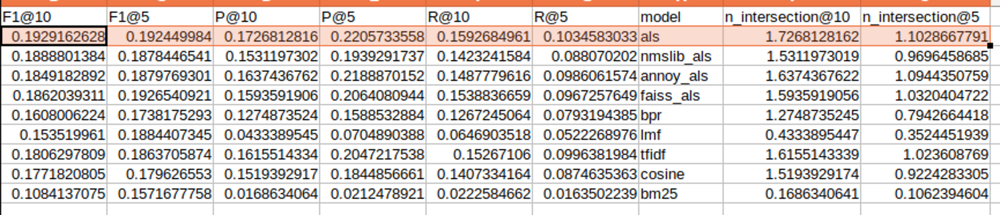
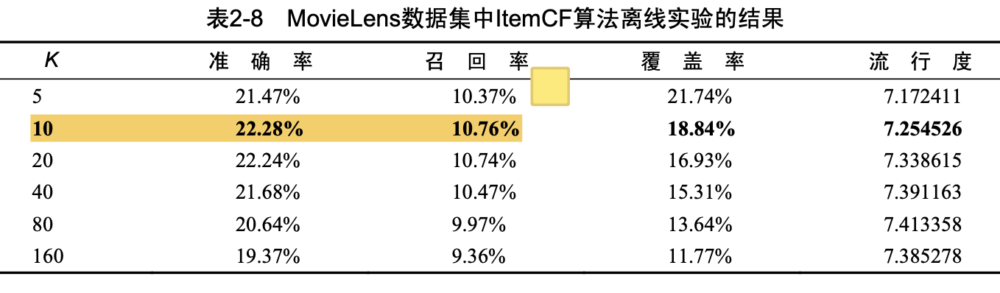
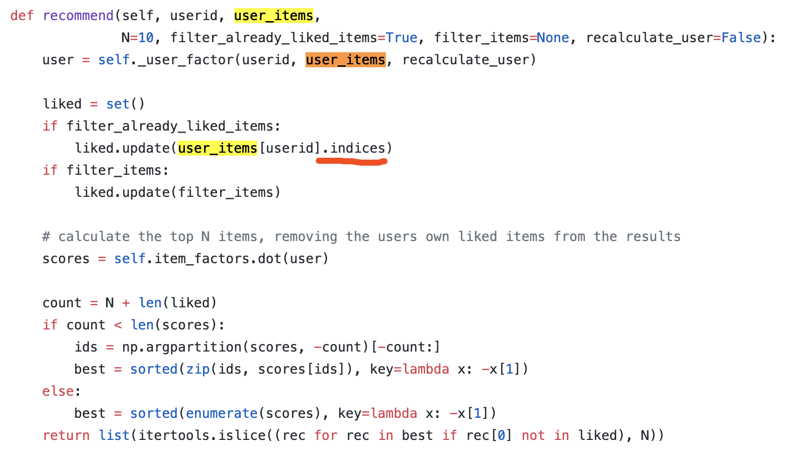
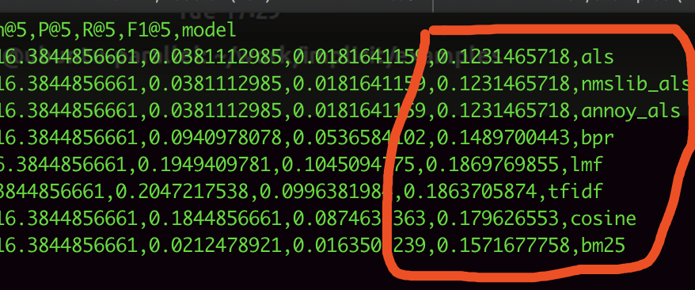
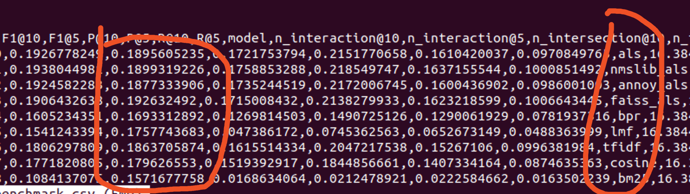

Implicit：推荐系统协同过滤库的测评
简介
Implicit是一个推荐系统协同过滤库。所谓协同过滤，只用到了user、item的ID和user、item交互后的评分（或是某个度量）。
GitHub：https://github.com/benfred/implicit
安装
pip install implicit
其他选择
自己照着「推荐系统实战」里的基于物品推荐的相似度公式（类似关联分析中的Lift公式），也写了一个item-item recommender。
- 看推荐结果，自己写与implicit ALS有点差别，与implicit Cosine的结果差不多。
- 纯python，没有并行，没有用C/C++，果然很慢。
- 自己写一个的目的，除了练手，也想看看implicit的效果具体怎么样。
- 生产使用，不建议用自己手写的，水平真的有限。
Spark Mllib怎么样。
- Spark Mllib支持分布式，感觉没必要。本来Implicit单机就很强了。只要把数据导出来，导到训练机器上即可。
- Spark分布式，扩展性好，但是性能并没有Implicit那么好。
- Spark还得搭配HDFS，真的蛮重的，开发效率也没那么好。
背后的原理
今早根据作者文章Distance Metrics for Fun and Profit，整理了一份读后感，把之前的知识给梳理起来了。这篇文章主要介绍的是距离公式，用于K近邻的推荐算法。
协同过滤算法分两类：
- 基于记忆的，K近邻算法（基于“距离”公式），建议使用BM25。优势在读后感中有写。（实际效果怎么样，还得看数据）
- 基于模型的，矩阵分解算法，建议使用 (implicit) ALS，其变种是支持implicit dataset的。矩阵分解算法SGD，只适用于评分。
效果，见测评图。ALS的效果是最好的了。这是在movielens100k的结果。

看起来指标都很低，「推荐系统实战」里差不多这个结果。

遇到的小问题
- K近邻算法的model没有model.recommend_all方法。
- model.recommend与model.recommend_all的返回数据结构不同，model.recommend是包含评分的，而model.recommend_all只返回ID。
- recommend(0)，传入第一个用户ID，与recommend_all[0]，取出第一个用户ID，两者的结果是不一样的，不管用什么算法都一样！去年12月就有这样的issue：https://github.com/benfred/implicit/issues/299，我解决了，回复了这个issue。
猜想，因为recommend方法用到indices的原因？试着重新构建下user-item维度的sparse matrix。改完后，果然就一致了。技术原因，sparse matrix transpose后，indices是未转置前的indices，没有变化。 具体地，user_items.indices与item_users.T.indices是不同的。

- ALS算法在Mac上表现稀烂啊，同样的代码。ALS_Faiss还报错了。先在Linux上用吧。
Mac上的ALS效果：

Linux上的ALS效果：

冷启动
一开始并没有那么多行为数据。训练出的结果肯定是挺一般的。这时候用标签推荐，运营根据经验配置标签和推荐的映射即可。
考虑用户特征、商品特征（而不仅仅是ID）
如果有user特征、item特征，可以使用更一般的监督学习算法。或是使用factorization machine。
Last modified on 2020-02-11